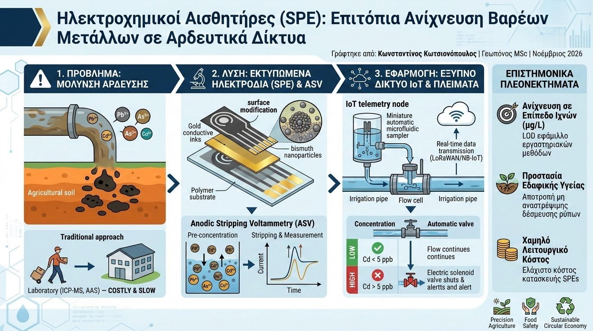

Η εντατικοποίηση των ανθρώπινων δραστηριοτήτων και η αυξανόμενη χρήση μη συμβατικών υδάτων (όπως επεξεργασμένα υγρά απόβλητα και επιφανειακές απορροές) έχουν καταστήσει τη μόλυνση των αρδευτικών δικτύων από βαρέα μέταλλα μία από τις σοβαρότερες απειλές για τη βιωσιμότητα της γεωργίας. Ιόντα μολύβδου (Pb²⁺), καδμίου (Cd²⁺), αρσενικού (As³⁺) και χαλκού (Cu²⁺) δεν αποδομούνται, αλλά συσσωρεύονται στο εδαφικό προφίλ, προκαλώντας φυτοτοξικότητα και εισερχόμενα στην τροφική αλυσίδα. Παραδοσιακά, ο προσδιορισμός τους απαιτεί μεταφορά δειγμάτων σε αναλυτικά εργαστήρια και χρήση εξοπλισμού όπως ICP-MS ή AAS—μια διαδικασία δαπανηρή και ασύμβατη με την άμεση διαχείριση πεδίου. Η τεχνολογία των Ηλεκτροχημικών Αισθητήρων (Electrochemical Sensors) προσφέρει πλέον μια αξιόπιστη, επιτόπια λύση.
Στην αιχμή αυτής της τεχνολογίας βρίσκονται τα Εκτυπωμένα Ηλεκτρόδια (Screen-Printed Electrodes - SPEs), τα οποία κατασκευάζονται μέσω μαζικής εκτύπωσης αγώγιμων μελανιών άνθρακα, χρυσού ή νανοσωλήνων άνθρακα (CNTs) σε εύκαμπτα πολυμερικά υποστρώματα. Τα ηλεκτρόδια τροποποιούνται επιφανειακά με νανοσωματίδια βισμούθιου ή χηλικούς υποδοχείς, προσφέροντας υψηλή εκλεκτικότητα και αποφεύγοντας τα τοξικά ηλεκτρόδια υδραργύρου του παρελθόντος. Η αναλυτική μέθοδος που χρησιμοποιείται είναι η Βολταμπερομετρία Αναδιαλυτικής Απόθεσης (Anodic Stripping Voltammetry - ASV): τα μεταλλικά κατιόντα προ-συμπυκνώνονται ηλεκτροχημικά στην επιφάνεια του ηλεκτροδίου εργασίας και στη συνέχεια οξειδώνονται διαδοχικά, παράγοντας χαρακτηριστικές κορυφές ρεύματος ανάλογες της συγκέντρωσής τους.

Η ενσωμάτωση των αισθητήρων αυτών σε αυτόνομους κόμβους τηλεμετρίας IoT μεταμορφώνει τον ποιοτικό έλεγχο των υδάτων. Ειδικές μικρορευστομηχανικές διατάξεις (microfluidic flow cells) δειγματοληπτούν αυτόματα από τον κεντρικό αγωγό άρδευσης, εκτελούν τον κύκλο μέτρησης και διαβιβάζουν τα αποτελέσματα μέσω πρωτοκόλλων LoRaWAN ή NB-IoT σε πραγματικό χρόνο. Εάν η συγκέντρωση οποιουδήποτε μετάλλου υπερβεί τα αυστηρά όρια του FAO/ΠΟΥ (όπως 5 ppb για το κάδμιο ή 10 ppb για το αρσενικό), το σύστημα διακόπτει αυτόματα την παροχή μέσω ηλεκτροβάνας, αποτρέποντας τη μόλυνση των αγροτεμαχίων.
Τα επιστημονικά τεκμηριωμένα πλεονεκτήματα της επιτόπιας ηλεκτροχημικής ανίχνευσης περιλαμβάνουν:
- Ανίχνευση σε Επίπεδο Ιχνών (Trace-level Detection): Τα όρια ανίχνευσης (LOD) των σύγχρονων τροποποιημένων SPEs κυμαίνονται σε υπο-ppb επίπεδα (μg/L), εφάμιλλα των κλασικών φασματοσκοπικών μεθόδων εργαστηρίου.
- Προστασία της Εδαφικής Υγείας: Η αποτροπή της εισόδου τοξικών μετάλλων διατηρεί ανέπαφη τη δραστηριότητα του εδαφικού μικροβιώματος και αποτρέπει τη μη αναστρέψιμη δέσμευση ρύπων στον αργιλοχουμικό κολλοειδή δεσμό.
- Χαμηλό Λειτουργικό Κόστος: Τα εκτυπωμένα ηλεκτρόδια έχουν ελάχιστο κόστος κατασκευής και δεν απαιτούν χρήση τοξικών οργανικών διαλυτών, επιτρέποντας πυκνό δίκτυο συνεχούς ελέγχου σε επίπεδο τοπικών οργανισμών εγγείων βελτιώσεων (ΤΟΕΒ).
Η εισαγωγή των ηλεκτροχημικών αισθητήρων στα σύγχρονα αρδευτικά δίκτυα κλείνει ένα κρίσιμο κενό στην αλυσίδα ασφάλειας της Γεωργίας Ακριβείας. Εξασφαλίζοντας ότι το νερό που φτάνει στη ριζοσφαίρα είναι απαλλαγμένο από τοξικά μέταλλα, ο σύγχρονος γεωπόνος προστατεύει το παραγωγικό κεφάλαιο, συμμορφώνεται με τα υψηλότερα πρότυπα ασφάλειας τροφίμων και προάγει μια αυθεντικά βιώσιμη κυκλική οικονομία.